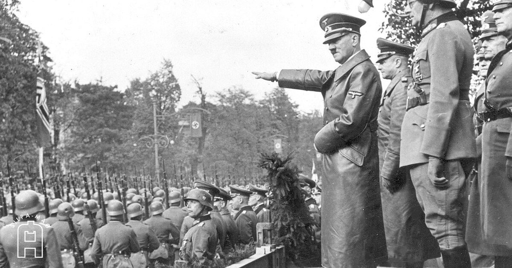

สาเหตุของสงครามโลกครั้งที่ 2

สงครามโลกครั้งที่ 2 เกิดขึ้นจากหลายสาเหตุที่สะสมมาตั้งแต่หลังสงครามโลกครั้งที่ 1 โดยเยอรมนีไม่พอใจกับเงื่อนไขของสนธิสัญญาแวร์ซายที่ทำให้ประเทศต้องสูญเสียดินแดนและต้องจ่ายค่าปฏิกรรมสงครามจำนวนมาก ต่อมาเกิดภาวะเศรษฐกิจตกต่ำทั่วโลก ทำให้ประชาชนเกิดความไม่พอใจและเปิดโอกาสให้ผู้นำเผด็จการขึ้นมามีอำนาจ โดยเฉพาะอดอล์ฟ ฮิตเลอร์ ผู้นำพรรคนาซีของเยอรมนี ซึ่งต้องการฟื้นฟูอำนาจและขยายดินแดนของเยอรมนี นอกจากนี้ อิตาลีและญี่ปุ่นก็มีนโยบายขยายอำนาจเช่นเดียวกัน ขณะที่สันนิบาตชาติไม่สามารถหยุดยั้งการรุกรานของประเทศต่าง ๆ ได้ จึงทำให้ความขัดแย้งระหว่างประเทศเพิ่มขึ้นเรื่อย ๆ